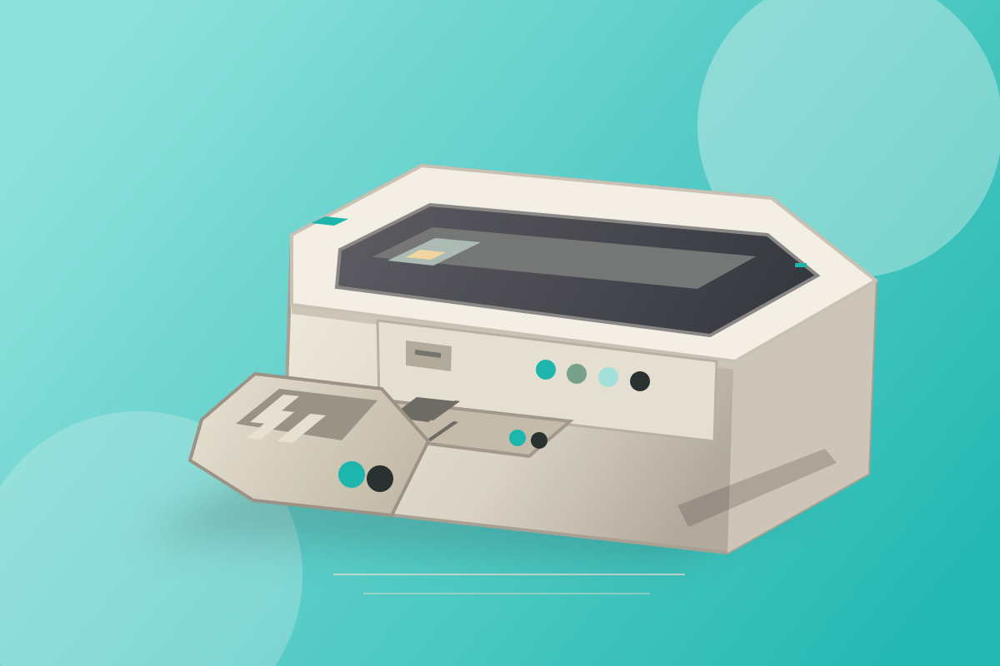

Selected workPROJECT 02 / PRODUCT STUDY
Retro
console.
A familiar console, seen through fresh eyes. An exercise in warm materials, satisfying shapes, and the kind of details that bring childhood back.
- DISCIPLINE
- 3D product study
- APPROACH
- Form & materials
- MOOD
- Playful nostalgia
PRODUCT STUDY 02 / 02RIGHT-CLICK & DRAG TO ROTATE

INTERACTIVE PREVIEW